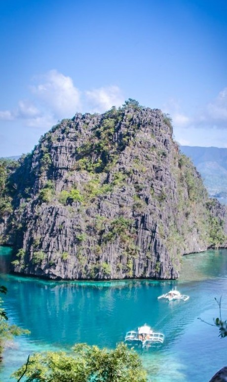

Region 4B, also known as MIMAROPA, is a region located in the southwestern part of Luzon, the largest island in the Philippines. MIMAROPA stands for the provinces that comprise the region: Mindoro (Occidental and Oriental), Marinduque, Romblon, and Palawan. It is known for its pristine beaches, rich biodiversity, stunning landscapes, and cultural heritage.
Mindoro is the seventh-largest island in the Philippines and is divided into two provinces: Occidental Mindoro and Oriental Mindoro. Occidental Mindoro is known for its coastal areas, coral reefs, and the Mounts Iglit-Baco National Park, a sanctuary for the endangered Tamaraw. Oriental Mindoro offers beautiful beaches, such as Puerto Galera, as well as the renowned Apo Reef Natural Park, a UNESCO World Heritage Site.
Marinduque is an island province known for its natural beauty and cultural traditions. It is famous for the annual Moriones Festival, a religious festival held during Holy Week that features colorful masks and costumes. Marinduque is also home to stunning beaches, waterfalls, caves, and the Bellarocca Island Resort and Spa.
Romblon is an archipelago province composed of several islands, the largest of which is Tablas Island. It is known for its marble industry, producing high-quality marble products. Romblon offers pristine beaches, crystal-clear waters, and opportunities for diving and snorkeling. The province also boasts scenic landscapes, waterfalls, and historical sites like Fort San Andres.
Palawan is an internationally renowned destination known for its stunning natural wonders. It is often hailed as the "Last Frontier" due to its rich biodiversity and pristine ecosystems. Palawan is home to the Puerto Princesa Subterranean River National Park, a UNESCO World Heritage Site and one of the New Seven Wonders of Nature. Other highlights include the beautiful islands of El Nido, Coron, and the Tubbataha Reefs Natural Park, a UNESCO World Heritage Site.
MIMAROPA is a region that offers a diverse range of attractions, from white sandy beaches and turquoise waters to lush forests, hidden caves, and vibrant marine life. It is a haven for nature lovers, adventure enthusiasts, and those seeking tranquility in idyllic island settings. With its cultural heritage, natural wonders, and warm hospitality, MIMAROPA invites visitors to experience the beauty and charm of this southwestern region of the Philippines.